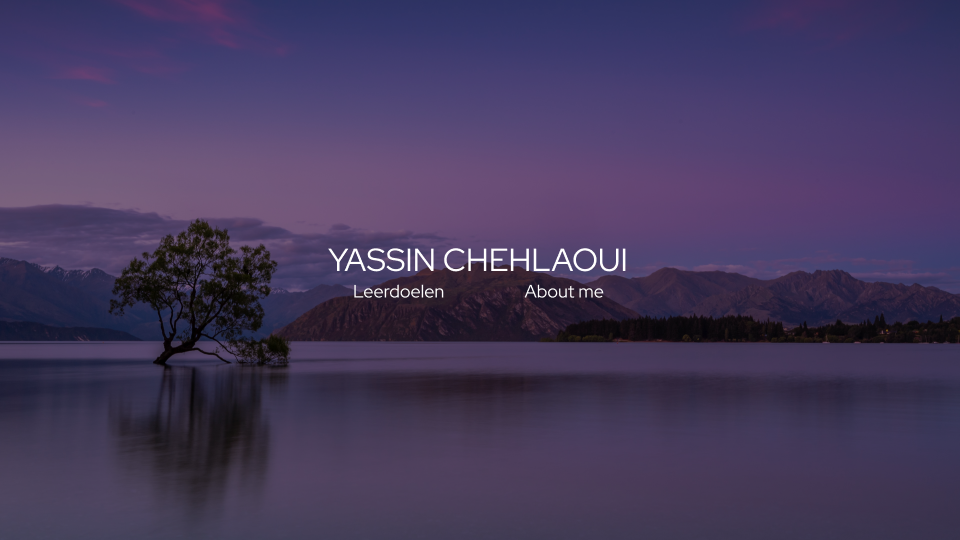
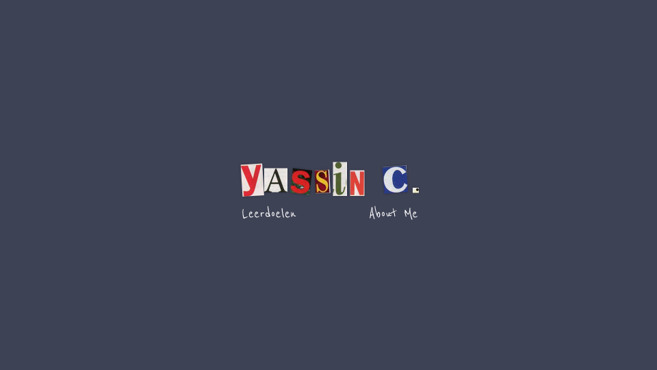
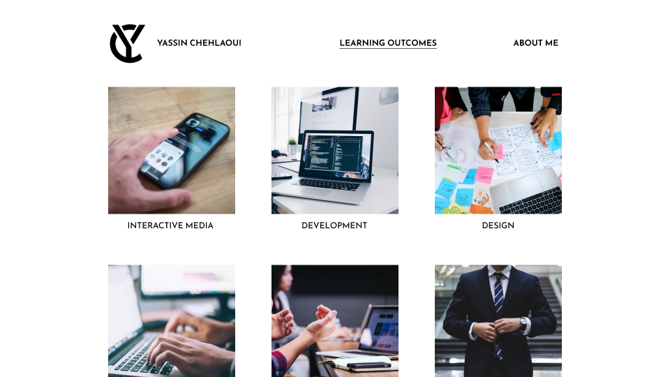
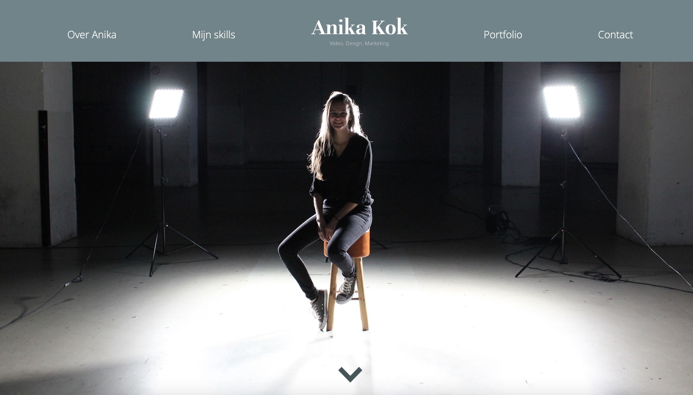
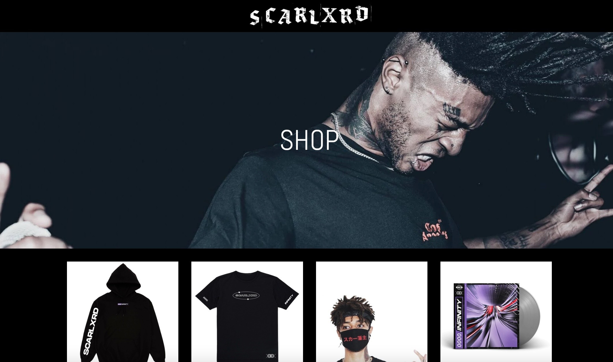
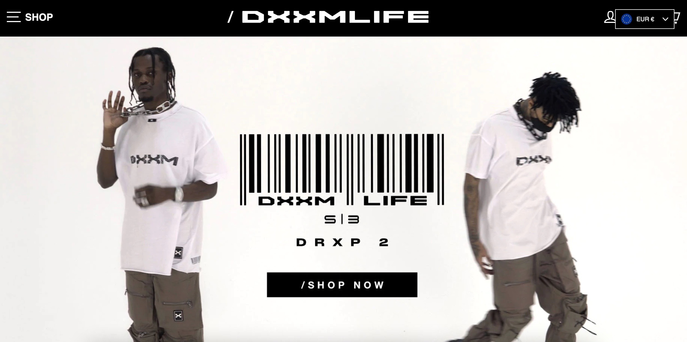

portfolio ux design
Aanpak
Voor de eerste portfolio review had ik 1 volledig uitgewerkt portfolio design voorbereid. Voorheen had ik 3 designs ontworpen waarmee ik bij alle designs halverwege mee stopte omdat ik telkens besefte dat ik eigenlijk niks aan het maken was wat mij als persoon uitstraalt. Hieronder kun je de designs bekijken.
  Na dit beseft te hebben ben ik meer gaan kijken naar andere portfolio's van oude mediastudenten van Fontys. Uiteindelijk kwam ik op de portfolio van Anika Kok en deze zag er zo uit.
Persoonlijkheid creëren
Wat mij een kickstart gaf voor inspiratie was het feit dat zij op haar voorpagina een foto van haarzelf had gezet, dit leek mij een cool idee om na te doen dus ik begon met het plaatsen van een foto van mij in mijn design die ik passend vond. Vervolgens ben ik daaruit verder gaan ontwerpen in een stijl die samenvalt met de foto. In dit geval was dat in mijn ogen een donkere strakke vibe, voorbeelden die ik hiervoor gebruikt heb zijn websites van Techwear bedrijven.
 Uiteindelijk kwam ik met het design waar ik zelf erg tevreden mee was. Dit straalt mij en mijn stijl veel beter uit dan de designs voorheen, die waren veel meer template-achtig en heel onpersoonlijk. Ik heb mijn interesses qua stijl en mijzelf als persoon erin proberen te verwerken. Ik hou van strakke, donkere websites die een mysterieuze vibe hebben en na de 3 voorhene designs gemaakt te hebben besefte ik dat ik niet aan het maken was wat ik wilde, maar wat zou appealen naar het merendeel aan mensen.

Feedback
Qua feedback kreeg ik te horen van mijn medestudenten dat het er goed en strak uitzag. Mijn
vrienden
die geen ICT achtergrond hebben vonden het er erg goed uitzien en vooral op mij als persoon
afgestemd qua stijl, en dat is precies waar ik voor ging met dit design. Zeker een
vooruitgang van
de vorige designs.
Van de docenten Sebastiaan en Evert kreeg ik de feedback om bij de foto
van de
voorpagina de "home" tekst weg te halen, het voorwoord te vervangen met een quote die mij
beschrijft
die nieuwsgierigheid opwekt, proberen dezelfde oranje kleur van mijn hoodie meer terug te
laten
komen op mijn website als een accentkleur, bij mijn leerdoelen de stockfoto's te vervangen
met eigen
foto's en om de documentatie meer leven te geven in plaats van dat het zo statisch is. Dit heb ik
allemaal zo goed mogelijk geprobeerd toe te passen in mijn portfolio.
Na mijn 2e
portfolio review gehad te hebben kreeg ik feedback van Jo-An en Lisette dat het er over het
algemeen
goed uitzag. Een paar aandachtpuntjes waren om te kijken of ik het navigeren naar projecten
sneller
kon maken met minder stappen, de tekst was niet heel goed leesbaar in de projecten, de
kopjes bij
projecten waren onderstreept wat het idee geeft dat er een link achter zit, en dat de
leerdoelen
fijner zouden zijn als ze volledig klikbaar waren en niet alleen de tekst klikbaar was. Dit heb ik
wederom ook zo goed mogelijk geprobeerd om aan te passen, de navigatie heb ik met een dropdown menu
proberen te verbeteren en de rest van de feedback heb ik volledig toegepast in mijn portfolio.
Na mijn 3e portfolio review gehad te hebben kreeg ik qua feedback, van Jo-An, Lisette en
Frank, dat ik nog even moest werken aan het versoepelen van de navigatie en dat ik mijn GitLab link
wat duidelijker moest maken. Deze feedback heb ik ook toegepast in mijn portfolio.